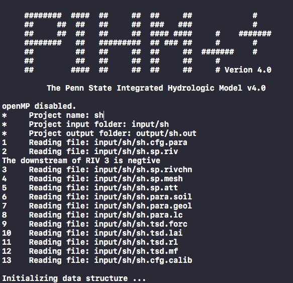

Chapter 3 Install PIHM and PIHMgisR
3.1 SUNDIALS/CVODE
The PIHM model requires the support of SUNDIALS or CVODE library. SUNDIALS is a SUite of Nonlinear and DIfferential/ALgebraic equation Solvers, consists of six solvers. CVODE is a solver for stiff and nonstiff ordinary differential equation (ODE) systems (initial value problem) given in explicit form \(y' = f(t,y)\). The methods used in CVODE are variable-order, variable-step multistep methods. You can install the entire SUNDIALS suite or CVODE only.
Since the SUNDIALS/CVODE keeps updating periodically and significantly, the function names and structure are changed accordingly, we suggest to use the specific version of the solver, rather than the latest solver.
| PIHM Version | SUNDIALS/CVODE version |
|---|---|
| PIHM v1.x | v2.2 ~ v2.4 |
| PIHM v2.x | v2.2 ~ v2.4 |
| PIHM v3.x | v2.2 ~ v2.4 |
| MM-PIHM v1.x | v2.4 |
| PIHM++ v4.x | v3.x |
SUNDIALS/CVODE is available in LLNL: https://computation.llnl.gov/projects/sundials/sundials-software
The installation of CVODE v3.x:
- Go to your Command Line and enter your workspace and unzip your CVODE source code here.
make directories for CVODE, including builddir, instdir and srcdir
mkdir builddir mkdir instdir mkdir srcdir cd builddir/Try ccmake. Install
cmakeif you don’t have one.ccmakeRun ccmake to configure your compile environment.
ccmake /Users/leleshu/Dropbox/PIHM/sundials/cvode-4.1.0 This is an empty configure. Press
This is an empty configure. Press cto start the configuration.
 The default configuration. Make sure the value for three lines:
The default configuration. Make sure the value for three lines:
BUILD_CVODE = ON
CMAKE_INSTALL_PREFIX = /usr/local/sundials
EXAMPLES_INSTALL_PATH = /usr/local/sundials/examplesAfter the modification of values, press c to confirm configuration.
 The ccmake configures the environment automatically. When the configuration is ready, press
The ccmake configures the environment automatically. When the configuration is ready, press g to generate and exit.
Then you run commands below:
make make installOptional library copy Sometimes, the code might not find the right library support in your system, try to copy the library in sundials folder to your system library folder.
cp /usr/local/sundials/lib/* /usr/local/lib/3.2 PIHM
Configuration in Makefile:
- Path of SUNDIALS_DIR. [CRITICAL]
- Path of OpenMP if the parallel is preferred.
- Path of SRC_DIR, default is
SRC_DIR = . - Path of BUILT_DIR, default is
BUILT_DIR = .
After updating the SUNDIALS path in the Makefile, user can compile the PIHM with:
make clean
make pihmThere are more options to compile the PIHM code:
make all- make both pihm and pihm_ompmake pihm- make pihm executablemake pihm_omp- make pihm_omp with OpenMP supportmake calib_mpi- make calib_mpi with MPI supportmake calib_omp- make calib_omp with OpenMP support
3.2.1 OpenMP
If parallel-computing is prefered, please install OpenMP. For mac:
brew install llvm clang
brew install libomp
compile flags for OpenMP:
-Xpreprocessor -fopenmp -lomp
Library/Include paths:
-L/usr/local/opt/libomp/lib
-I/usr/local/opt/libomp/include3.2.2 Run pihm executables.
After the successful installation and compile, you can run PIHM models using
./pihm <projectname> Command line pattern is:
Command line pattern is:
./pihm [-p projectfile] [-o output_folder] [-n Num_Threads] <project name> <project name>is the name of the project[-p projectfile][-o output_folder]is to write all model output variables in the specified output directory[-n Num_Threads]is number of OpenMP threads, which works withpihm_omponly.
When the pihm++ program starts to run, the screen should look like this: 
3.3 PIHMgisR
This PIHMgisR is an R package. What you need is to install the package as a source code package. For example:
install_github('shulele/PIHMgisR')That is all you need to deploy the PIHMgisR.